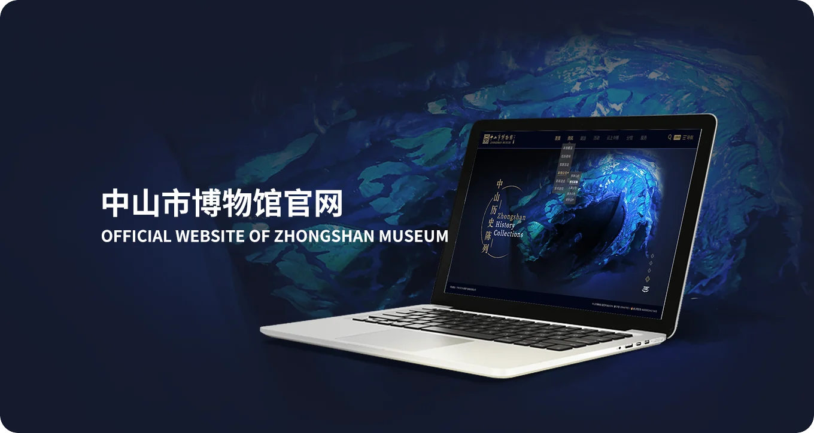
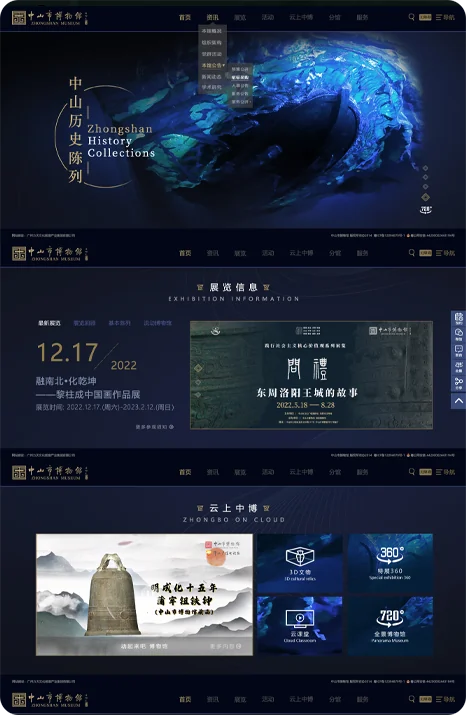
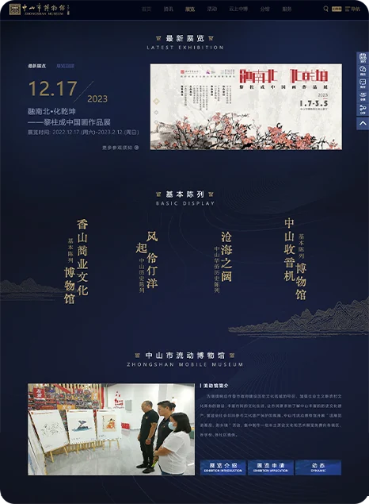
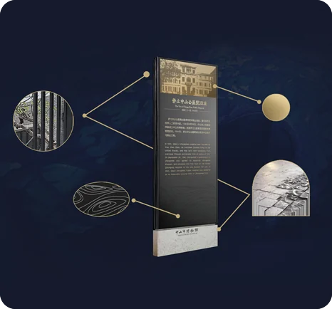
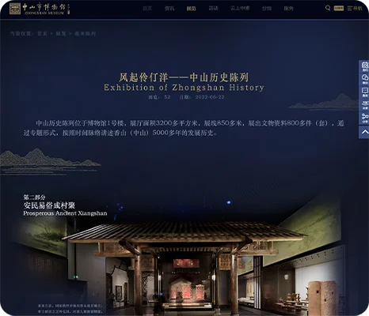
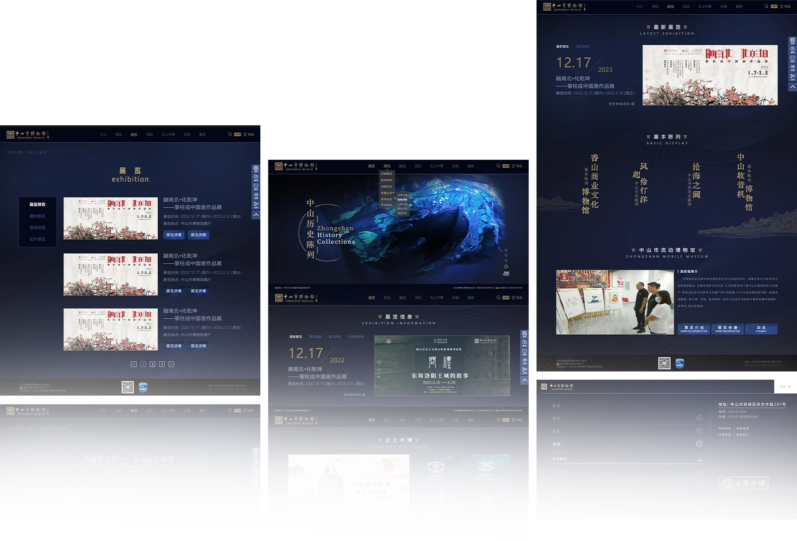

中山市博物馆官网
五千年历史与华侨奋斗史

官网UI方向
中山市博物馆（国家二级博物馆）位于石岐街道孙文中路，2022 年新馆开放，园林式布局融合中西历史建筑与现代空间。以香山文化、华侨精神、商业文脉为核心特色。常设“风起伶仃洋”“沧海之润”两大主题展，系统呈现香山五千年历史与华侨奋斗史。下辖全国首家收音机专题馆、香山商业文化馆等，馆藏涵盖陶器、书画、华侨文物，鲜活诠释中山“敢为天下先”的城市品格。




